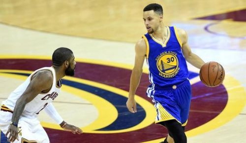

基本情况
| 姓名:陈松 | 性别:男 | 籍贯:四川省泸州市 |
| 出生年月:1994.3 | 年龄:22岁 | 婚姻状况:未婚 |
| 健康状况:非常健康 | 身高:170cm | 政治面貌:团员 |
| 专业:软件工程 | 学校:成都理工大学工程技术学院 | |
| qq:1255193400 | 电话:181-8028-7886 | |
工作经历
2016/4-2016/8 成都七彩云创信息技术有限公司；职位是前端开发工程师；在职期间主要任务是还原UI妹子的效果图。偶尔自己切图，能够精确到1px；核心工作是配合后端完成页面数据交互。
在职项目《商汇通》、《钟元堂》。（我一个人负责前端）
2015/11-2016/2 热土科技有限公司，实习，写文档居多。
个人技能
JavaScript
大二的时候开始学习，之后自学，能够用纯javascript进行前端工作，能用javascript写出轮播图，手风琴和一些动画。对EMScript5有一定学习，了解EMScript6。
CSS+HTML
熟练运用CSS进行布局，HTML标签语义化有一定的理解，能够适配各种浏览器；能够进行进行响应式布局。会用CSS3和HTML5，能用SCSS进行开发工作，对移动开发有所了解。
jQuery
众所周知jQuery是javascript的一种轻量级框架，它的产生使得前端开发更为便捷。本人熟练运用jQuery，能把javascript和jQuery完美结合使用。会用基于jQuery的框架Bootstrap。
其他
能够独立用Photoshop进行切图，精确到1px。熟悉运用HTML5标签；会用bootstrap,了解angulajs。nodejs有所学习，今后发展方向倾向于nodejs；独立的完成一个网站的前台和后台。提升开发效率。
学校经历
2008/9-2012/6月，高中时期：就读于四川省泸州市古蔺县“蔺阳中学”，在校期间一直努力学习，成绩从学校1000名提升到120名左右。积极参见学校各种活动，并在高二时期包揽了学校3000m和1500m长跑冠军。
2012/9-2016/6月，大学时期：就读于成都理工大学工程技术学校，电子信息与计算机工程系,软件工程专业。在校期间积极参加班级组织的各种活动。在学校篮球赛和足球赛上都有优异的表现
在校主修课程：JavaScript程序设计、Java程序设计、C语言程序设计、算法分析、数据结构、数据库导论、线性代数、高等数学
选修课程：平面设计
爱好
basketball
依稀还记得初中的时候詹姆斯1s绝杀的时候同学们的兴奋。去年看了勇士队一半的比赛；从开局24连胜到创记录的赛季73胜；再从1-3落后雷霆到连扳3场战胜战胜雷霆；再从3-1领先骑士到被骑士连扳3场。见证了勇士上赛季的辉煌与遗憾。我相信这个赛季的勇士会卷土从来，问鼎冠军；缔造勇士王朝。
football
喜欢足球是从巴西世界杯开始的。对于足球场的种种场景开始幻想，满脑子里都是足球，急不可耐的想去用脚去踢球，很亢奋得一种状态，到底还是年轻，精力四射，期望着赶紧下课，这样就能去操场撒欢去，回来后，身体脑袋还是一种很兴奋的状态，以至于上课心不在焉，成绩自然不会很好，我不知道我的那种激情从何而来，要是这样的状态去干点别的事，那该多好，当然足球给我带来了很多快乐，我也很享受那种大汗淋漓的感觉，身体也比以前好多了 。足球也教会了我一些东西，我相信每一个踢足球的人都想当前锋，都想进球成为整个球场的主角，但是足球要想玩起来，还要有后卫中锋守门员，大家各司其职，每个人在自己的位置上干自己的事，共同的目的就是一块努力进球，这和公司的体制是差不多的，各司其职，互相配合，共同完成工作任务，获得盈利，游戏规则都是差不多的
自我评价
1、本人性格开朗、为人诚恳、乐观向上、兴趣广泛、拥有较强的组织能力和适应能力、并具有较强的管理策划与组织管理协调能力。 2、忠实诚信,讲原则，说到做到，决不推卸责任;有自制力，做事情始终坚持有始有终，从不半途而废;肯学习,有问题不逃避,愿意虚心向他人学习;自信但不自负,不以自我为中心;愿意以谦虚态度赞扬接纳优越者,权威者;会用100%的热情和精力投入到工作中;平易近人。为人诚恳,性格开朗,积极进取,适应力强、勤奋好学、脚踏实地，有较强的团队精神,工作积极进取,态度认真。 3、活泼开朗、乐观向上、兴趣广泛、适应力强、上手快、勤奋好学、脚踏实地、认真负责、坚毅不拔、吃苦耐劳、勇于迎接新挑战。